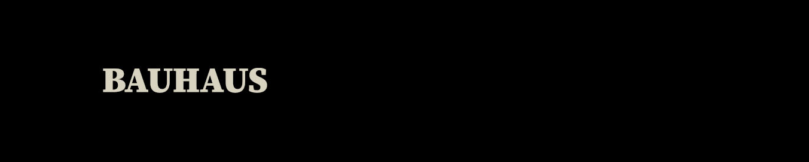

Som det allerførste tema blev vi som studerende på Københavns Erhvervs Akademi (KEA) Multimediedesign introduceret til temaet ‘Grundlæggende HTML’. Her fik vi i starten til opgave i grupper at undersøge vores tilegnede stilart heraf ‘Bauhaus’ og efterfølgende præsentere stilarten i plenum. Dette gav en fundamental forståelse for design og tiden bag oprindelsen af denne samt de andre stilarter der blev præsenteret. I samme omgang fik vi viden omkring skrifttyper, sammensætning af disse, farver samt betydningen omkring rgb, cmyk og hex farve koder.
Et af de første programmer vi installerede var Cyberduck, hvoraf det bruges som en ‘online server’ til alle dokumenter vi skal uploade på vores eget domæne fremadrettet.
Efterfølgende blev vi stillet til opgave at opbygge en lille introduktion til hvem vi selv er som personer i ren HTML. Dette blev gennemarbejdet af de andre i klassen og vi fik derved feedback på om kravene var opnået. Noget af det første HTML vi lærte var bl.a. at gøre brug af Hyperlinks, filplaceringer og basal markup.
I samme regi lærte vi om redigering af billeder i Adobe Photoshop og skulle dermed lave endnu en introduktion til os selv, som er blevet hængt op i gange på 2. sal.
Så blev det tid til at være lidt kreativ i Adobe Photoshop igen og her skulle vi kreere både et MoodBoard og StyleTile som bruges til både inspiration og som udgangspunkt for opbygning af websites og deres design og visuelle udtryk.
Naturligvis er HTML ikke det eneste vi har lært i det første tema. HTML’s bedste kammerat kaldet CSS er vi ligeledes blevet bekendt med. Her bruges CSS som styling af det indhold der er lagt ind i HTML dokumentet, dette gøres med eksempelvis flexbox, farve- og typografi ændringer m.m.
Vi har også skulle opbygge et Splash billede af flere omgange som indsættes i vores Stilartsite samt et fav-ikon. Her blev vi bekendte med skitsering.
Inden vi færdiggjorde Stilartsitet har vi opbygget det som design i programmet Adobe Indesign, her var det med fokus på ‘Mobile First’ og derefter de større formater heraf tablet og desktop.
Slutproduktet bestod har en sammensætning af ovenstående opgaver. Heraf skulle vi opbygge en ‘StilartSite’ bestående af HTML og CSS, bl.a. med styling med farver, margin, media queries og flexbox, som tog udgangspunkt i vores tildelte stilarter i starten af forløbet.
